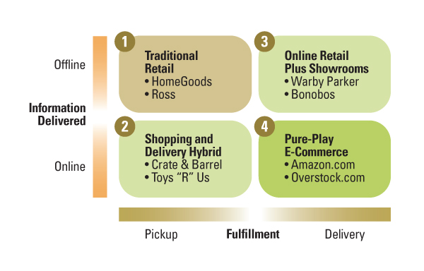

线上下融合的全渠道零售已深入消费者，在此背景下，零售商应该重新思考如何将信息和产品传递给消费者。本文是全渠道零售学习的另外一篇翻译文章，原文《How to Win in an Omnichannel World》刊载在MIT Sloan Review 2014年秋季刊中。
居住在马萨诸塞州阿什兰的教师Paula Cuneo收到了之前从Gap的网站上订购的10条不同颜色和尺寸的灯芯绒裤子，然后退了其中的7条。根据2013年Wall Street Journal的文章，Cuneo小姐无意中成为了全渠道零售环境中关键挑战的代言人——在这个环境里，顾客购物行为发生在线上下的各种渠道中——而关键挑战则是「如何提供足够的产品信息而减少产品退货？」。
获得产品信息和最终获得产品存在关联关系，全渠道环境中对二者即是机会、亦是挑战。无论是传统零售店起家的Gap、或是从线上业务开始的眼镜零售商Warby Parker，所有零售商全渠道策略的核心都在于如何有效和高效地管理产品信息和产品配送。
本文提出了一个帮助零售商在全渠道零售环境中成功的框架，这个框架关注于消费者，并把「信息提供」和「获得产品」作为创新核心。框架由我们针对传统和新兴零售商的研究结果产生。我们发现：所有零售商的策略都围绕在「信息提供」和「获得产品」，同时整合购买过程中每个阶段中可能发生的「碎片化」。这意味着：
- 用更加具有时效性、适配当前场景、性价比更高的信息传达，降低或去除顾客购买时的门槛和担忧；
- 用更优化、更经济的配送方式，将产品配送至顾客手中。
我们的研究基于从全渠道零售商获得的客户行为数据（例如访问、购买、退货次数等）。我们使用这些数据去观察各种手段（例如网站优化、添置店内智能设备）对这些数据变化的影响（见「研究方法」一节）。我们解释了全渠道环境中成功的要诀是：1）以顾客出发 2）通过「信息提供」和「获得产品」两个核心视角进行规划。最后，我们对这两个核心视角中的具体实践进行详细解释。
研究方法
我们的研究数据来自于Crate & Barrel, Bonobos.com和WarbyParker.com全面的客户数据库，同时参考其他第三方的开放数据。我们通过和许多零售业领导者的协作，让这份报告不但具有学术价值，也包含第一手的行业经验。
核心框架
我们认为「以顾客为中心」依然是整合公司各种实践的最优选择。本框架提出了两个最基础的问题：
- 顾客如何通过获得信息完成购买？
- 顾客如何获得购买的产品？

顾客要么通过到店获得产品信息、要么在异地获得（如网站、产品手册）；同样在获得产品方面，顾客要么自取、要么选择配送。
在存在之前，零售业通常只有两种形式存在。第一种在上图的左上角，产品信息和获得产品都在实体店完成。目前许多零售商依然采用这样的方式进行销售，例如Ross Stores或者HomeGoods。另外一种是「目录零售（catalog retailers）」，顾客通过在纸质产品目录上进行选择、通过电话的方式订购、产品寄送到家（右下角的第四象限），这可以被认为是早期的纯电商模式，后来互联网的出现后，网站取代了目录和电话的作用。
互联网经济大大刺激了互联网零售商（以前的目录零售）的发展，诸如亚马逊、Overstock.com，传统零售和互联网零售之战就在第一象限和第四象限间展开。而「全渠道革命」真正的战场在于线下线上更加模糊的第二和第三象限。
我们的另一个发现是零售商有潜力管理这个矩阵中的每个象限，然而真正的挑战在于如何选择一种合适的组合方式（如何获得信息和如何获得产品）。
所有传统零售商（无论是销售自有品牌产品或其他品牌产品）都从第一象限开始，通过实体店的方式提供信息和提供产品。在全渠道零售时代，这些零售商的目标是二、三、四象限。同样的道理，纯网商的目标则是二、三象限、并考虑和第一象限的传统零售商合作。
实践策略
第一象限的传统零售商依然具有统治地位，无论在发达市场国家或发展中市场国家。2013年的一份数据显示，电商（除去旅游）在零售市场的比重在英国、美国、中国和印度的比例分别是10%、8%、6%、和1%。
尽管如此，在美国和其他许多国家，第四象限的发展势头迅猛，传统零售商们踊跃参与着在第四象限的拓展——建立自己的电商渠道。我们预测，「获取信息」和「获取产品」的绑定（第一象限和第四象限的标准模式）依然是零售业的基础开始模式，但新入的竞争者将开始尝试第二象限和第三象限的模式，而这，正是来自于将「获取信息」和「获取产品」分开带来的机会。让我们首先看看信息纬度。
信息：远距离获取和直接获取
在零售商采用线上经营（象限二和象限四）的手段时，顾客通过远距离传递的方式获取产品信息，例如邮寄目录或者一个网站。这样的「信息传递」方式更加适合那些拥有较少「感官体验」属性的产品，例如：舒适度、材质、口味等等。对于「感官体验」的不确定性是阻碍顾客进行线上购买最主要的原因。而当客户成功购买过一次此类产品之后，对于产品的熟悉度，就将降低「感官体验」对购买决策的负面影响——顾客可能开始使用线上购买的方式进行持续购买。
相反，当零售商采用线下经营（象限一和象限三）的手段时，顾客通过直接的物理接触方式获得产品信息。这样的「信息传递」方式则更加适合那些拥有较多「感官体验」属性的产品。此点又是许多只在象限一经营的零售商被「Showrooming」现象（线下尝试、线上选择更便宜的网商购买）所累的原因，因此减少「Showrooming」现象的影响是象限一零售商的核心目标。
因此，象限四模式特别适合顾客对产品有稳定的期待和较多的理解、或者不太需要直接的客户服务；象限一模式则特别适合那些具有更多「感官体验」的产品，却很容易受到「Showrooming」现象的影响。这二者都可以在第二象限和第三象限中找到更好的模式提高顾客的体验和销售额。
产品：配送或自取
关于产品获取的方式，矩阵左侧（象限一和象限二）与右侧（象限三和象限四）的零售商在客户体验和经营方面有显著的不同。从顾客的角度，在实体店直接获得产品有好有坏：一方面顾客毋须支付配送费用或等待便可获得产品，但另一方面，顾客付出了交通的成本；类似的，通过配送的方式获得产品也有利有弊：一方面付出了配送费用和等待时间，却节省了交通成本，以及获得了那些没必要在实体店展示的产品。
而从零售商的角度出发，产品交付对于矩阵左（象限一和象限二）右（象限三和象限四）而言也面临着不同的挑战。在店内交付产品，零售商就必须管理更加巨大的库存、更大的场地、以及产品在店内的展示，这些都大大提升了零售商的成本。
更大的挑战在于店内交付要求零售商必须在对的地点、对的时间准备对的产品。为了达到这一点，传统零售商必须准确预测产品在不同店面的需要，而这对于传统零售商而言挑战极大。更高的需求不确定性，导致了供需不匹配，而造成库存过多的成本、或者缺货造成的销售减少。
相反，通过配送的方式进行产品交付（象限三和四）避免了实体零售的许多问题。首先，产品交付可以通过集中的配送中心完成，这些配送中心往往位于成本更低的地点；其次，集中式的交付模式更好地预测了供需关系。这种经营效率的提升尤其适合那些最小库存单位（高SKU值）极大，而对单品需要较低的零售商。
线上获取信息，到店获取产品
Crate & Barrel是一家位于伊力诺依州北布鲁克的传统家居零售商：从象限一开始但在不停开辟象限四的模式。那么它能否在象限二中开辟一些新模式，提供一种混合式的模式呢？为了测试象限二中的混合模式，Crate & Barrel在全美范围内开辟了「线上购买、到店取货（BOPS）」的服务模式。其他零售商例如Toys “R” Us以及The Home Depot也在最近启动了类似的服务。
Crate & Barrel在美国和加拿大拥有众多的零售店，BOPS的选项仅为美国地区提供。为了了解BOPS的真实效果，我们从不同角度分析了美国和加拿大顾客行为（例如，某个特定品类的产品销售或整体店面人流）的区别。
Crate & Barrel被称作「高端宜家」，深受北美中高端消费者的喜爱。
理论上来说，BOPS提供给顾客一种独特的价值定义。首先，顾客可以精准地获得产品信息，其次，顾客到店后可以马上获得产品。因此BOPS用精准的信息消除了顾客「白跑一趟」的担忧，弥补了传统到店消费的弊端。BOPS同时又避免了线上购物需要等待的问题，把获得产品的主动权还给了顾客。因此，BOPS模式帮助顾客既享受了线上购物获得信息的便利和准确、又获得了实体购物立即获得产品的好处。
零售商们预测BOPS出现后，线上销售额在美国会持续增长，意外地是，尽管线上访问流量上升，线上销售额反而下降。请注意，大量Crate & Barrel的商品「感官体验」属性较多，很难通过线上沟通的方式体验，顾客更倾向于到店体验，因此BOPS的模式正好解决了顾客决定到店前不确定商品是否有货的疑虑，同时，这一模式并不是为了解决顾客无法体验商品「感官体验」的难题。
事实上，整体的店内销售实现了增长。顾客通过BOPS模式确定了商品的价格和是否有货，前往店内体验并购买。BOPS用互联网解决了在店内获得信息受限的问题，又用店内取货的方式解决了互联网无法体验的问题。
BOPS购物模式的另外一种变体是「线上研究、到店购买（ROPO）」，或「逆Showrooming（或Webrooming）」方式。这种方式帮助传统零售商通过更准确和丰富的线上产品信息最终提升实体店的人流和销售。从我们的研究来看，BOPS和ROPO模式下，顾客访问实体店后的购物额有明显提升。
到店获取信息，通过配送获取产品
Crate & Barrel完成了象限一到象限二的拓展，而另一端，是诸如Warby Parker这样纯互联网零售商从象限四到象限三的尝试。正如之前提到的，当产品拥有更多「感官体验」时，顾客更需要到店购买。而到店购买对于品牌而言还可以提升更多品牌认同感、拉近顾客和品牌之间的距离。
Warby Parker虽是一家互联网零售商，其实体店以有格调的布展著称。
Warby Parker的管理者深知眼镜这样的产品一定需要亲自感知和试戴，于是推出了「在家试戴」的模式，免费寄送顾客五付镜框，并允许顾客保留5天，同时在互联网上推出虚拟试戴的系统，顾客可以上传自己的照片，搭配不同镜框的样式。然而，Warby Parker认为这两种方式依然不能满足客户的需要，因此他们推出了第三种方式：「全线试戴」模式。（Warby Parker也在尝试象限一中的模式，它们在纽约、波士顿和洛杉矶都开有实体分店。）
这种模式下，Warby Parker把所有镜框的样品开设在了合作伙伴商场的「试戴点」里，这些地点不存储库存，顾客满意某个镜框之后需要从网络进行订购，而不能直接获得。这种「全线试戴」的方式正是象限三的典型模式：信息在店内被交付、而产品通过配送的方式完成。
Warby Parker在购物中心Nordstrom的「试戴点」
我们尝试通过需求、品牌、退货等纬度了解这种「0库存」销售模式的效果。为了测评这种混合式的销售模式，我们围绕一个「试戴点」方圆30英里的区域建立了所谓「交易区」的概念，看看「交易区」内的销售是否因为这种直接的尝试方式而提升。
最简单的办法是比较「交易区」内「试戴点」建立前后销售和退货的变化。这种方法忽略了地点本身对这些数据的影响，于是我们改进了分析方法：我们选择了两类城市：
- 城市A：拥有「试戴点」；
- 城市B：没有「试戴点」。
我们比较了以下两种情况：
- 城市A和城市B在都没有「试戴点」时的销售额差异；
- 城市A和城市B在城市A拥有「试戴点」后的销售差异。
我们的研究结果发现了许多有趣的结果。首先，有「试戴点」城市中「交易区」整体销售额增加了9%（比较对象是那些没有「试戴点」但使用其他方式的城市），可见提供「亲身体验产品信息」为公司带来客观的销售额增加；其次，我们发现在「交易区」（根据邮编进行判断）发生的网上销售增加了3.5%。可见「试戴点」帮助互联网零售企业增加品牌知名度和客户亲密度。
我们也分析了「试戴点」对其他模式（如「在家试戴」）的影响。「试戴点」开始运行之后，「在家试戴」的销售额减少了5.5%，使用该服务的顾客减少了8%。在这一渠道上销售额和顾客的双减也提升了整体服务的销售转化率，因为更多的客户转移到转化率更高的「试戴点」渠道。
因此，从结果来看，在线零售商尝试在线下提供实体的产品体验展示，确实提升了品牌的销售额和运营效率。Warby Parker通过不同类型的「试戴方式」提高网络销售的转化率，同时每种方式的转化效率不同，在有「试戴点」的区域，退货的概率下降，顾客选择转化效率更低、成本更高的「在家试戴」的概率也在下降。同时，对在线零售商而言，我们不能简单把增加线下诸如「试戴点」似的展示点，当作扩大品牌影响力、帮助顾客体验的最优且唯一方式，它应该是多种体验方式组合的一种，零售商应该有策略根据转化效率和成本，结合当地情况引导顾客选择最佳方式在购买前体验产品。
我们的研究发现，一些临时性的手段也可以达到类似的效果。Warby Parker用复古校车穿梭在美国多个城市，人们可以在校车上试戴镜框并购买。我们的评估结果表示，校车停靠的城市，线下和线上的销售都有明显增加。短期「Pop-up」式的销售模式正在成为一种新的销售平台，例如thestorefront.com尝试把艺术家、设计师、以及零售商集中在特定销售点做短期的销售。
Warby Parker在穿梭于美国各大城市的大巴，也是流动的「试戴点」
信息对于顾客的重要性
顾客从商家那里获得产品的信息，但真实世界却没那么简单，顾客所在的区域（例如不同人口密度）和所处环境都对产品信息的传达产生重要影响，特别是那些无法用数字形式表达的「感官体验」，这一对于网络男装零售商Bonobos.com而言尤为重要。
Bonobos是一家以男装为主的互联网零售商
Bonobos和Warby Parker一样从第四象限开始，后来尝试涉足实体体验店。这些小规模的实体店（约120平方米）提供较少的单品供客户试穿，不允许直接购买以保证足够的库存，利用配送的方式（线上零售惯用的方式），这种方式和Warby Parker的「试戴点」非常类似。这种象限三（线上配送、线下体验）的策略被Bonobos证明非常有效。同时Bonobos也在拓展其象限一的模式，把实体店开在了诸如Nordstrom这样的美国知名百货商店里。
 Bonobos把线下实体店开在了诸如像Nordstrom这样的购物中心中
Bonobos把线下实体店开在了诸如像Nordstrom这样的购物中心中
产品信息不单单来自零售商，还来自其他人，信息通过线下或线上的社交网络传递。「社会资本（Social Capital）」决定了信息在人之中的辐射能力（例如拥有较多社会资本的明星可以轻易引发某种商品的流行），因此我们也希望找到它与信息传递之间的关系，于是我们一方面收集了Bonobos实体店开张时在2007年10月的网上销售数据，同时用这一数据比较相关社会资本评估数据（来自康涅狄格大学的调研结果）。
我们的发现非常惊人。首先，综合不同区域销售数据显示，将近一半首次使用Bonobos.com完成购买的顾客受到「社会资本」的影响（例如朋友推荐、社交网络影响等）。其次，销售在拥有较高「社会资本」的社区（人与人关系更亲近、互动更多）增长更快。后一点非常微妙，并非「社会资本」刺激了销售，而是「社会资本」更加活跃帮助产品信息更容易被人相信、更容易被传播、效果也更好。简单来说，人们越相信口碑传播，销售增长越快。
然而经营者可能很难随时获得这些专业的学术数据，更直接的方式是去寻找那些天生具有汇聚「社会资本」功能的场所。在Bonobos这个上下文里，针对25到45岁对时尚有一定要求的男性，一个区域中人均拥有酒吧和酒水超市数量便可成为一个有效评估「社会资本」的指数。最后的结果是，在其他条件同等情况下，线上销售与这个指数成正比。
虚拟试衣间减少退货
之前提到，在线下，让产品信息更好地在现有和潜在客户间流动，可以帮助提升线上的销量；此外，在线下增加实体展示还可以帮助零售商降低商品的退货率，此点对于线上零售同样成立：更好的信息传递将降低线上零售的退货率。
此点对零售商而言至关重要。传统零售商（第一象限）不得不面对产品退货的问题，而互联网零售商（第四象限）则把退货问题的挑战提高到另一个级别。Bonobos的创始人兼首席执行官Andy Dunn表示：「企业总收入和净收入之间躺着退货」。事实上，退货的影响对于线上零售商而言日趋显现。据UPS统计，2013年圣诞季中商品退货率提高了15%，据估计，三分之一线上销售的产品被退货。
虚拟「试衣间」可能是解决线上零售退货问题的良药，而目前已经出现一些帮助顾客获得准确身材信息并推荐尺寸的技术。我们对一家提供虚拟试衣技术的公司Metail进行研究，尝试找到在线上提供此类信息对于销售额和退货率的影响。
一家采用了Metail虚拟试衣技术的互联网零售商
我们的实验从一家大型网上服装零售商的顾客中随机挑选了两组顾客：一组曾经使用过Metail的虚拟试衣技术；另一组从未使用。我们发现第一组的顾客的销售转化率更高，退货率也更低。因此，我们得出结论，更加高质量的针对个人的信息，无论线上线下渠道，都是全渠道零售重要的工具，更是降低产品退货率的手段。
总结：服务全渠道顾客
2013年MIT斯隆管理评论的一篇文章中曾预测：「零售行业正在向更加无缝连接的全渠道体验演进，线上线下的区别被模糊，世界将变成没有墙的展示室。」我们相信我们所提出的框架将帮助零售商找到自己的方向。
在这篇文章中，我们从一个购物故事开始，主人公不确定自己喜欢哪条裤子于是订购了10条并最终退掉了其中的7条，这样的购物方式正在挑战零售商提供产品信息和配送产品的效率。为了应对这样的挑战，我们提出了一个以客户为中心的矩阵式框架，这个框架有「信息提供」和「获得产品」两个纬度，每个纬度上有两个区间（信息通过线上或线下提供，产品通过自取或配送获得），矩阵一共四种组合将涵盖并解释大多数线上或线下零售商的全渠道策略。
我们讲述了传统实体零售商如Crate & Barrel如何通过线上渠道提供更准确和全面的产品信息以及库存信息，帮助顾客体会「感官体验」。这样的服务不但让顾客在实体店之外就开始建立与品牌的互动关系，同时在到店之前就完成交易的一部分，例如选择家具，最终提升其线下销售。
同样，我们也展示了传统互联网零售商如Warby Parker把展示店开在了线下。线下的展示空间给互联网零售商带来了可观的销售增长和退货下降，同时结合各种「体验渠道」，产品信息（无论是可数字化还是不可数字化的感官体验）通过顾客喜欢的方式传达，最终提升其线上销售，降低商品退货。
顾客的思考和购物行为在全面全渠道化，这意味着对「获得产品信息」和「获得最终产品」的方式不再固定。以往，完善全渠道零售对于零售商而言只是一个锦上添花之物，而现在，它是零售商必须考虑的战略目标。问题早已不是「要不要做」的问题，而是如何让全渠道战略的执行更加有效。我们的研究表示：全渠道零售中致胜的关键，在于零售商不断在挑战新的区间，不断为顾客提供合适的关于「获得产品信息」和「获得最终产品」的服务组合。
写在最后
这是一篇被低估的文章，阅读了十多篇关于全渠道零售的文章之后，深感本文对于理解全渠道战略独特的角度，以及理解全渠道零售战略有着提纲挈领的作用，在尝试理解一家零售商的经营策略时，这个框架提供了一个非常清晰的入口即：
- 如何提供商品信息（物理的或感性的）给顾客？
- 如何把商品最终交付给顾客？
围绕这个入口，对于不同领域的零售商（无论是传统或是互联网零售），策略并不是单一的，而是组合的，一关于如何提供信息、二关于如何交付商品。这个组合又跟产品的属性、客群特征、所在地点有一定关系。
本文让我梳理出一套完整的全渠道零售业务逻辑，后续文章将具体讲述：
- 全渠道零售的关键在于「全」而不在「渠道」；
- 「渠道」将被慢慢弱化，就像线上线下的界限已经模糊；
- 零售商的任务依然不变，无论线上或实体，都是提高转化率和降低退货率；
- 「全」在于顾客获得商品信息的手段全、在于顾客获得商品本身的方式全；
- 顾客在于不同情况下需要不同的「商品信息」和「商品获得」的组合方式；
- 零售商需要找到顾客在不同情况下不同的组合，同时又能提高转化率和降低退货率；
- 全渠道零售业务的精髓在于，如何找到这种组合？如何实施这种组合？
- 每种组合背后都存在：1）如何准备更多合适的信息（Curation）？2）如何更高效地完成产品送达（Fulfillment）？
- 关于信息系统的改造永远围绕在产品信息（背后是数据如何汇聚、抽象、传达、表现）和产品送达（背后是库存优化、预测、前后台管理）。
该框架有一点需要更多思考的是，从产品信息角度来看，简单区分线上线下可能不够，有三个穿越线上或线下因素需要着重考虑：
- 社交关系对内容的影响；
- 从众对内容的影响；
- 个人情感对同样内容的影响。
从商品送达的角度，简单区分到店取和配送可能不够，至少一种模式可能不在这个框架之中，那就是，众筹模式，即购买还不存在的商品。
这个框架同时很好地解释了为什么未来零售的模式绝对不会是「互联网零售」取代「实体零售」，同时下一代未来零售业的独角兽，一定会出现在第二和第三象限。